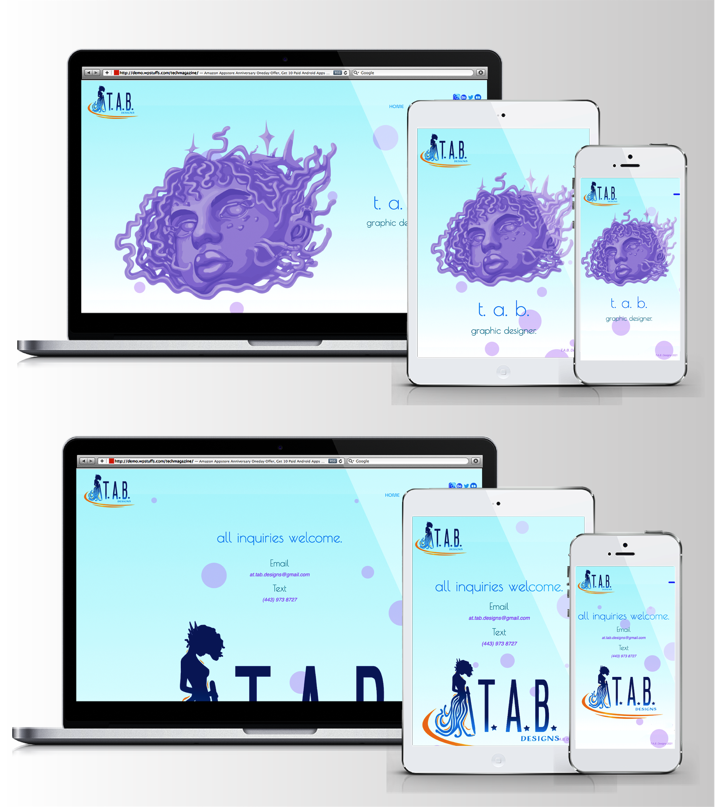
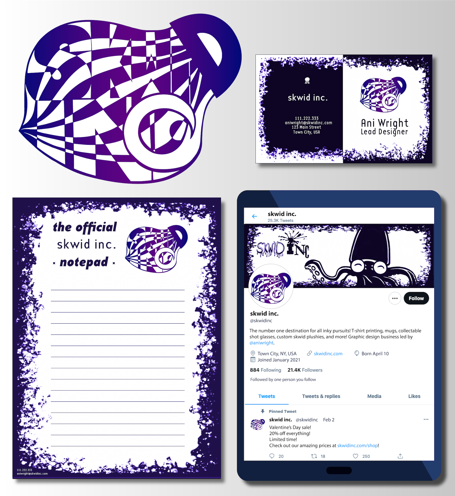
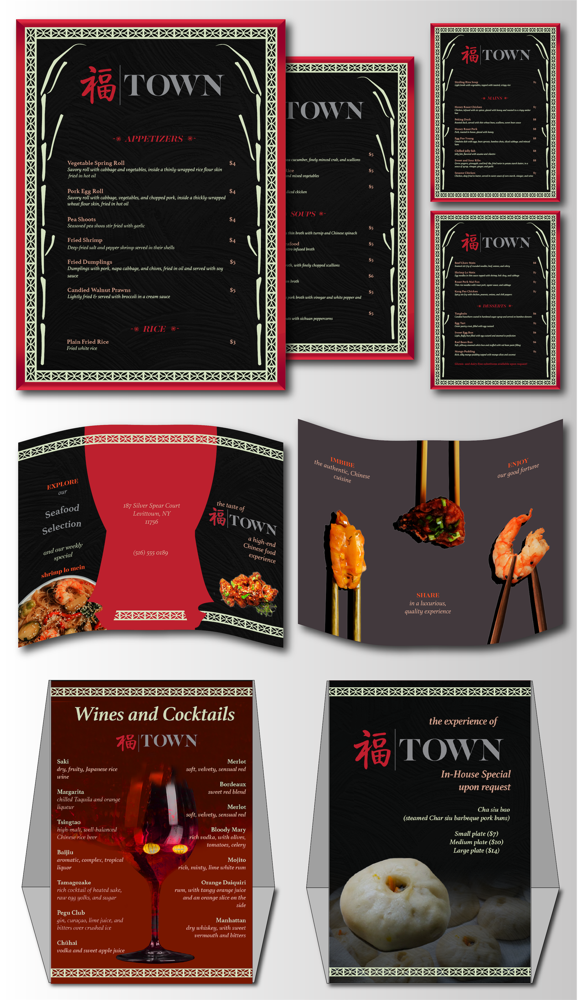
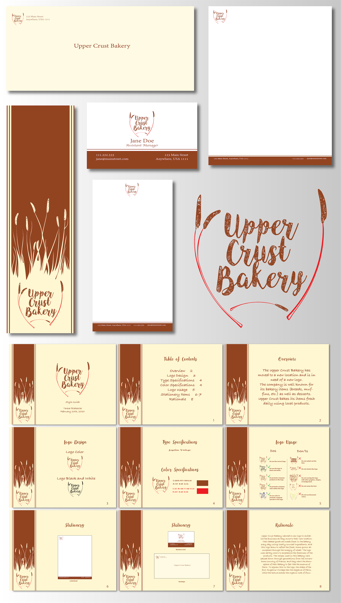
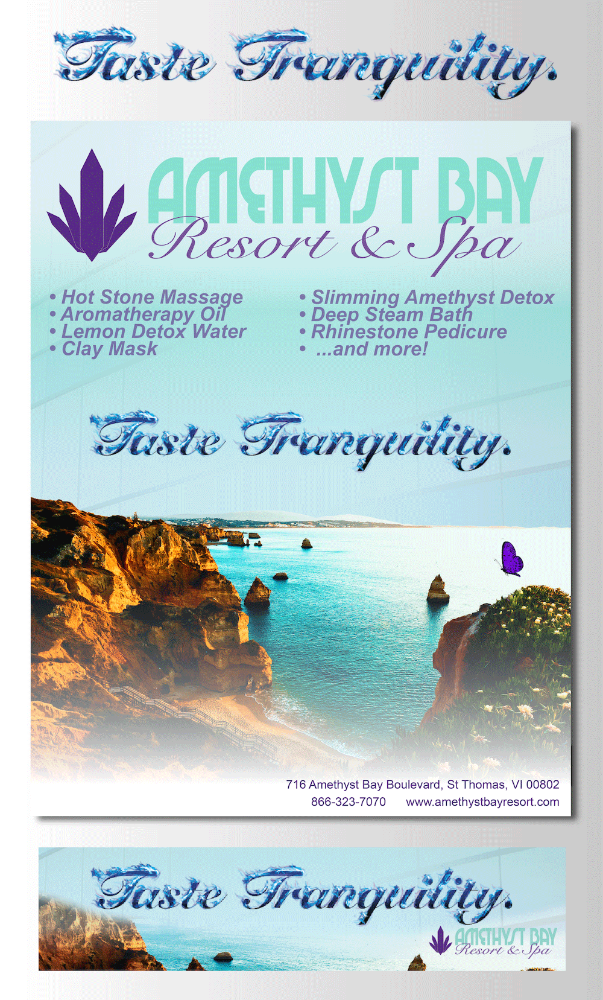
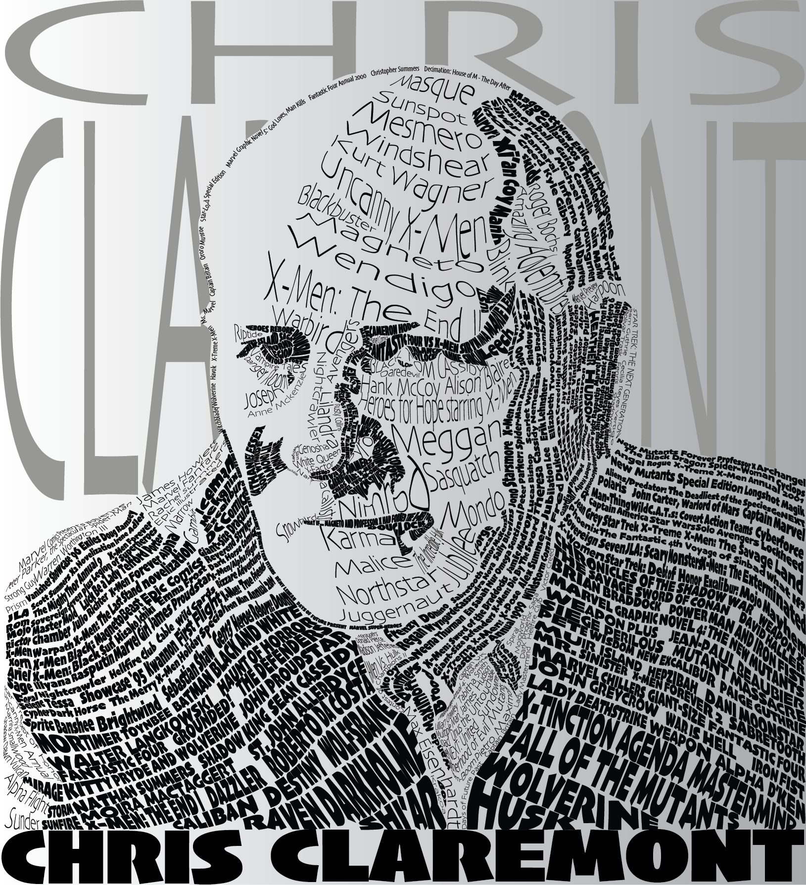
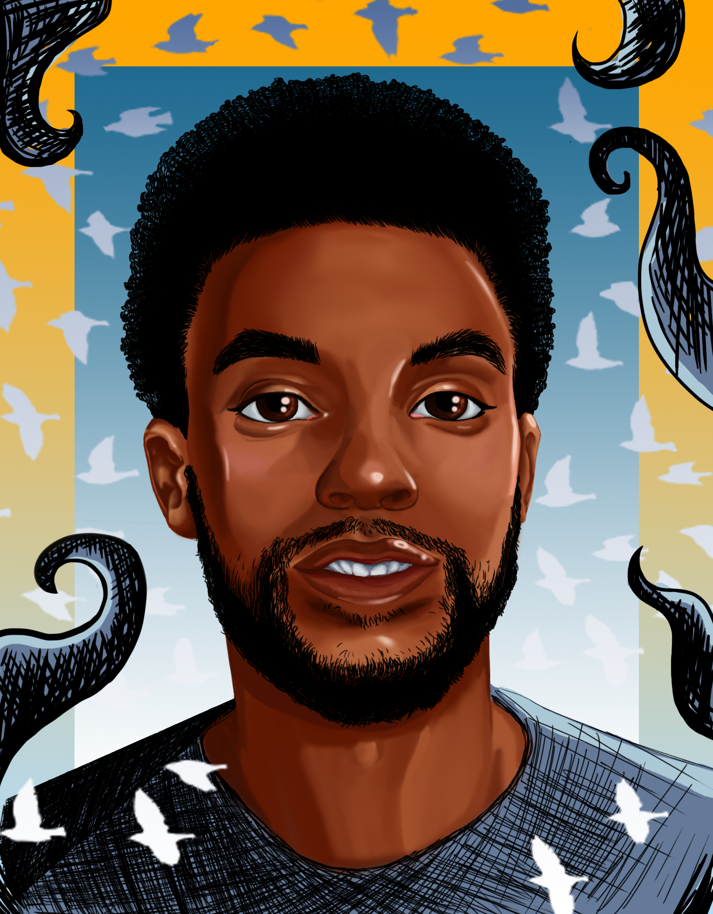
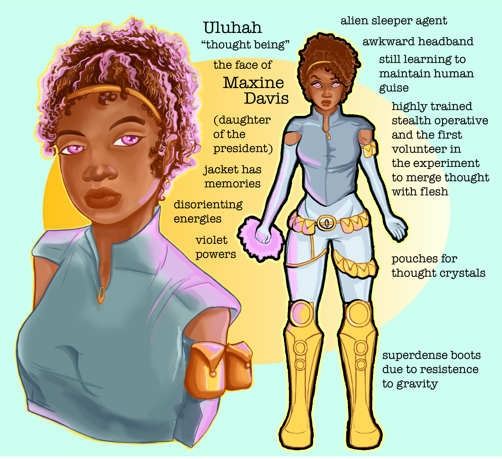
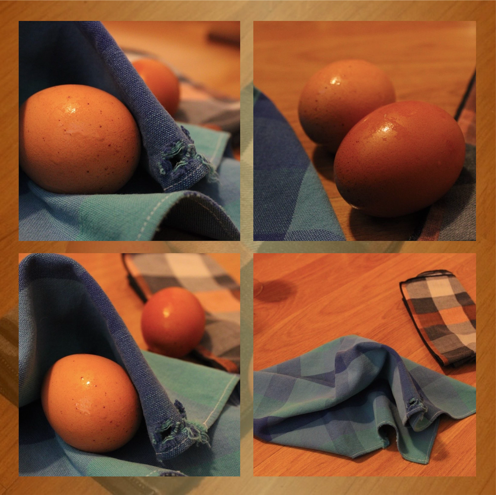
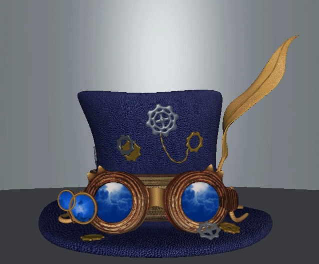

my portfolio.
Web Design
My Portfolio Website

I conceptualized my portfolio website through a sitemap and wireframes; then coded this website with Brackets, using HTML, CSS, and Bootstrap. I wanted a dramatic yet bubbly design in peaceful sea colors to introduce people to my art. Through minimalism, the focus remains on the art; atmospheric, semi-transparent bubbles are intended to compliment without overpowering. On the homepage is an illustration of one of my original sea squid characters, who in turn draws upon the same motifs of my sea squid logo. This homepage illustration is painted in Photoshop, and vectorized and further modified in Illustrator.
Branding
T.A.B. Designs

All of my branding materials have an undersea theme, where light filters gently into the depths — as slow and steady as the meandering of squids, octopi, and schools of fish en route to reach their goals; nature is truly inspiring. The sea is both gentle and fierce. Blue is proven by science to be the most peaceful color, while the richness of orange-gold brings the warmth the ocean holds. The curves of my site logo shape a flexible kind of structure.
skwid inc.

In my college class 101 Basic Design & Color Theory, I created a fictional graphic design business which I called "skwid inc." inspired by my own branding — from name, to logo, to online and print branding materials. I knew early on much of the impact would come from contrast, and I wanted a squid logo that was striking while still fun; this meant a defined general silhouette with more interior detail. A subtle gradient (deep violet and indigo) deepens a monochromatic color scheme; deep as the hues of a squid's inky home.
TOWN

Provided with an existing style guide for a fictional restaurant, my COM 232 Desktop Publishing college class tasked me with achieving the goals of the establishment to expand its branding with a new menu, a trifold brochure, and a table tent. With the mission statement as a guide, I researched to faithfully reflect the restaurant's intention of elegance and good fortune through lighting and colors.
Upper Crust Bakery

Given a brief summary of the fictional business Upper Crust Bakery, in my college class COM 230 Graphics & Layout Print Media, I created a logo and accompanying style guide to denote logo usage, color, type specifications, and type specifications. In the logo and style guide, I paired the typefaces Angeline Vintage and Bradley Hand Bold in the spirit of the bakery's home-baked warmth to craft stationary (a letterhead, envelope, business card, bookmark, and notepad) in a analogous color scheme; parallel line motifs recall lines of wheat just as grainy textures recall flour's grain.
Amethyst Bay Resort & Spa

Employing Photoshop, Illustrator, and some deliberate usage of the typeface Snell Roundhand, I designed two ads for the fictional Amethyst Bay Resort & Spa in my college class GRA 220 Intro to Digital Imaging. I aimed to perpetuate brand consistency with an alliterative tagline, emphasized with a cold fire text effect I created using a combination of blending modes and manipulating photographs of fire to embody a cleansing spa.
Illustration
Typographical Portrait

In my college class GRA 340 Typography, I created a typographical portrait of the iconic Uncanny X-Men (1975-1991) writer Chris Claremont. Words are power, and the portrait is made of many of them: namely, story arc and character names that Claremont created, wrote, or developed. To Claremont, any failure of inclusion of diversity amongst comic book characters was to deliberately cut off art from “the full potential of human possibility;” and in this portrait, many iconic characters are typed and manipulated in the plethora of font styles of Skia — a sans-serif Humanist typeface which draws upon ancient letterforms.
Chadwick Boseman

In this portrait, I used Photoshop's hard round brush and soft mixer brush to heighten a contrast between the black and blended tones. Chadwick Boseman was an icon, who by all accounts lived his life in kindness beyond being a celebrity. Life and death come fully unexpected; and these waves of dark and light grasp that wildly in abrupt, contrasting strokes of line art, stark atop the doves' pale, fading gradient. Chadwick was a superhero who was taken too soon.
Character Design

This is a character I created for a story where thought beings come to Earth with the ultimate goal to “better” both themselves and the human race by merging the best qualities of both species. This character, the protagonist, is a thought being who undergoes an experimental psychic procedure to become the first of these new beings, which goes horribly wrong: seemingly eliminating her host. With her memory in tatters, she joins with other collateral damage of the human scientists her people made contact with, leading her down a journey of seriously rethinking the vision that brought her here.
Photography
Egg & Napkin

In my class FAS 226 Digital Photography, I made use of a wide aperture and low shutter speeds on my camera in a study of the textures of brown eggs and cloth napkins. Eggs are irresistibly unique in that the same eggs can appear rough or smooth depending on their environment. These eggs are damp, catching the lighting of their space and illuminating that imperceptible line all the more.
3D Prop
Steampunk Hat

In my college class GRA 202 3D Modeling and Animation, I created a steampunk hat using Autodesk Maya. I began with sketching the concept art for a top hat, selecting a stormy blue color scheme, and strategizing which steampunk elements I wanted to include. The darker colors and textures give the prop an older, weathered look; the core blue of the hat is brought out by the brighter blue of the lenses. In Maya, I built the forms of the object, UV mapped it, textured it, and animated it on a turntable.